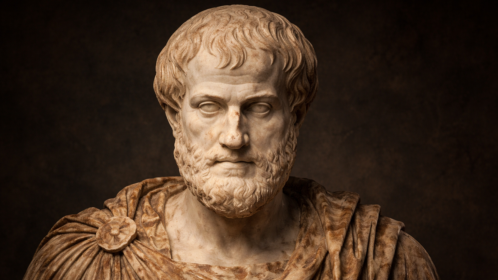

Una filosofia realista que rebutja el dualisme platònic i ancla la realitat en els individus particulars del món sensible.
Aristòtil va néixer el 384 aC a Estagira, una colònia grega de Macedònia. Fill d'un metge de la cort del rei de Macedònia, va ingressar a l'Acadèmia de Plató amb 17 anys i hi va romandre fins a la mort del seu mestre.
Després d'abandonar l'Acadèmia, va viatjar, va fundar una escola pròpia i va ser cridat per Filip II de Macedònia per ser preceptor del seu fill: el jove Alexandre el Gran.
"Filip II va aprofitar la feblesa de les polis gregues per dominar-les totes. En morir Alexandre, les ciutats estat lliures van passar a dependre dels reis: la polis com a ideal de vida havia entrat en decadència."
El 335 aC va fundar a Atenes el seu propi centre, el Liceu, on impartia classes passejant pels jardins — d'aquí el nom dels seus seguidors: peripatètics. Va morir el 322 aC, un any després que Alexandre el Gran.
La teoria de la substància, matèria i forma, potència i acte, motor immòbil.
La naturalesa, el canvi, el moviment i la cosmologia.
La felicitat (eudaimonia), la virtut com a terme mitjà, la prudència.
L'ésser humà com a animal social. Classificació dels règims polítics.
L'ànima com a forma del cos. Les tres funcions: vegetativa, sensitiva, racional.
Plató
Idealisme. Dualisme: món sensible / món de les Idees. Les essències són transcendents.
Aristòtil
Realisme. Un sol món: el sensible. Les essències són immanents als individus.
"Plató és el meu amic, però la veritat és encara més amiga meva"
Tot i ser deixeble de Plató durant vint anys, Aristòtil va rebutjar la teoria de les Idees. Pensava que l'intent platònic d'entendre la realitat amb essències transcendents creava dificultats majors que les que pretenia resoldre.
Plató diu que les coses sensibles participen de les Idees, però no explica com funciona exactament aquesta participació. Aristòtil considera que el concepte és tan confús i contradictori que no aclareix res.
En lloc d'explicar el món sensible, Plató en crea un segon (el món de les Idees) que necessita la mateixa explicació. En comptes d'aclarir les coses, dobla el problema.
Si les essències es troben en un espai separat i independent de les coses, com poden explicar allò que les coses són? L'essència ha de ser immanent, present dins dels individus mateixos.
Aristòtil rebutja el dualisme ontològic. L'única realitat que existeix és la que podem trobar en els individus particulars del món sensible. No hi ha cap món intel·ligible format per Idees transcendents.
Món de les Idees
Etern, immutable, perfecte. Les essències vertaderes. Accessible a la raó.
Món Sensible
Canviant, imperfecte. Còpies de les Idees. Accessible als sentits.
Un sol món: el sensible
Les essències estan en les coses particulars, no separades d'elles. La realitat autèntica és la que podem veure i tocar.
"L'ésser es diu de moltes maneres"
"Aristòtil defineix la substància com allò que existeix en si mateix i no en un altre. Els individus particulars del món sensible — aquesta taula, aquest gos, aquest ésser humà — són substàncies."
D'acord amb el realisme metafísic, allò que realment existeix són els individus particulars. La distinció fonamental:
Existeix en si mateixa. Els individus particulars: aquest gos, aquesta taula, aquest arbre. Realitat primària.
Existeix en un altre. Les qualitats, propietats i atributs de la substància. El color blanc no existeix per si sol.
Aristòtil analitza els usos del verb "ésser" en el llenguatge i identifica les dimensions de l'existència. La primera i més important és la substància; les altres nou són accidents:
La substància primera és l'individu concret (aquest gos, aquesta Anna). La substància segona és l'espècie o gènere (gos, ésser humà): l'essència universal que l'enteniment abstreu dels individus i que existeix com a concepte a la ment.
Aristòtil admet que cada individu té una essència que el defineix. Per entendre-la, distingeix dos principis en tota substància:
Allò de què és feta una cosa. El substrat, la potencialitat. La fusta de la taula.
La manera com la matèria s'organitza. L'estructura que fa que la cosa sigui allò que és. L'essència immanent.
La forma és justament allò que fa que una taula sigui una taula i no una cadira. En això consisteix l'essència: en allò que fa que alguna cosa sigui allò que és i no cap altra cosa diferent. Per a Aristòtil, essència = forma.
A diferència de Plató, la forma aristotèlica no es troba en cap altre món. Pertany al món sensible, perquè no és res més que la manera concreta com els individus estan configurats per tal de ser allò que són.
Per explicar completament una cosa, Aristòtil creu que cal identificar quatre principis o causes. Exemple: El Youness fa un vaixell de paper.
Allò de què és fet un ésser. En l'exemple: el full de paper.
La forma o essència. En l'exemple: la idea de vaixell de paper (el model).
L'agent que ha produït la cosa. En l'exemple: el Youness.
El propòsit o finalitat. En l'exemple: explicar la teoria de les quatre causes.
Les quatre causes es redueixen a dues: matèria i forma. La forma és simultàniament causa formal, eficient i final: des de dins, dirigeix el canvi i marca el fi a assolir. Això fa la filosofia aristotèlica teleològica: tot ésser tendeix a realitzar plenament la seva essència (telos).
"L'ésser es diu de moltes maneres. Cal distingir dues maneres d'ésser: l'ésser en potència i l'ésser en acte."
El canvi era un dels grans problemes dels presocràtics. Parmènides negava que fos real. Aristòtil l'accepta i l'explica:
Té la capacitat de transformar-se, però encara no ho ha fet. La nou és una noguera en potència.
Ha realitzat plenament tot el que podia ser. La noguera és una noguera en acte.
El canvi es produeix quan un ésser en potència passa a ser en acte: actualització de les possibilitats latents.
Per a Aristòtil, "tot allò que es mou és mogut per un altre". Cada moviment pressuposa un motor anterior. Però això no pot ser una cadena infinita: ha d'existir un primer motor que mou sense ser mogut.
El motor immòbil és activitat pura, sense potencialitat. No pot ser mogut perquè no té res en potència que pugui actualitzar-se.
La resta de l'univers es mou perquè aspira a imitar la perfecció i bellesa d'aquest primer motor. El mou com a objecte d'amor i desig, no per contacte físic.
Aristòtil identifica el motor immòbil amb Déu. Però no és una divinitat personal: és una força còsmica impersonal, perfecta i eterna. No el Déu del cristianisme.
La matèria s'associa a la potència (allò que pot ser), la forma s'associa a l'acte (allò que és). Tot canvi és un procés de la matèria informant-se, de la potència actualitzant-se, guiat per la forma com a principi intern.
Un univers geocèntric, etern i heterogeni
Sense telescopis ni instruments moderns, els grecs basaven l'astronomia en l'observació a ull nu. Aristòtil va construir el seu model a partir del d'Eudox, afegint-hi elements propis.
La Terra al centre. Al voltant hi giren tots els astres en òrbites circulars perfectes, encastats en esferes transparents.
El cosmos sempre ha existit i sempre existirà. No té origen ni fi temporal.
L'univers és finit, tancat per l'esfera exterior dels estels fixes. Més enllà no hi ha res.
Es divideix en dues regions radicalment diferents regides per principis oposats.
Sol, planetes i estels (per sobre de la Lluna)
La Terra i la seva superfície
Si "tot allò que es mou és mogut per un altre", la cadena de motors no pot ser infinita: cal un primer motor que mogui sense ser mogut. Aristòtil el identifica amb Déu.
Acte pur
Sense cap potencialitat. No pot ser mogut perquè no té res en potència a actualitzar. Activitat pura i perfecta.
Causa final còsmica
Mou com a objecte d'amor i desig, no per contacte. L'univers aspira a imitar la seva perfecció i bellesa.
Déu impersonal
No és Zeus ni el Déu cristià. Força còsmica impersonal, perfecta i eterna. "Pensa el pensament": s'autocontempla.
"El primer motor mou com allò que és estimat. L'univers sencer aspira a imitar la perfecció d'aquest motor immòbil, i d'aquí neix tot el moviment còsmic."
De la metafísica a l'ésser humà...
Cos i ànima: una unitat substancial inseparable
D'acord amb l'hilemorfisme, l'ésser humà, com qualsevol substància, és un individu compost de matèria (cos) i forma (ànima). Però això no implica cap dualisme platònic.
"L'ànima és a l'ésser humà el que la vista és a l'ull. Un ull que veu és un ull que funciona. De la mateixa manera, un cos viu és un cos 'animat', amb ànima."
Plató
L'ànima és presoner del cos. Dues realitats separades. Cos = obstacle. Ànima = immortal i preexistent.
Aristòtil
Cos i ànima formen una unitat substancial. L'ànima és la forma del cos. Mor amb el cos.
L'ànima és el principi d'activitat vital. Aristòtil distingeix tres funcions o nivells, en ordre creixent de complexitat:
Nutrició, creixement i reproducció. Compartida per tots els éssers vius: plantes, animals i humans.
Percepció, desig i moviment local. Compartida per animals i humans. Permet percebre i interactuar amb el món.
Parlar i raonar. Exclusiva de l'ésser humà. La funció que ens defineix com a espècie i fonament de la vida ètica.
Si l'ànima és la forma del cos, quan l'organisme deixa de funcionar (mort), l'ànima no pot continuar existint. L'ànima no és immortal — a diferència del que creia Plató.
"No hi ha res en l'enteniment que abans no hagi estat en els sentits"
"Aristòtil fixa els principis bàsics de l'empirisme en la filosofia antiga. La crítica a l'idealisme platònic fa impossible que el coneixement hagi estat adquirit en cap preexistència prèvia: no hi ha reminiscència ni idees innates."
El coneixement universal (les essències) s'assoleix a partir dels particulars, no al revés. El procés és:
Les essències que l'enteniment abstreu (substàncies segones o conceptes) existeixen realment en les coses com a forma substancial. No són invencions de la ment ni Idees transcendents: és un reflex fidel de la realitat.
Una ètica eudemonista i teleològica
Tots els éssers humans aspirem a ser feliços (eudaimonia). Però la felicitat no és la simple satisfacció de necessitats bàsiques — és la realització plena de la nostra naturalesa racional a través de la pràctica de la virtut.
Les virtuts ètiques regulen el comportament en la relació amb els altres. Aristòtil les defineix com a hàbits selectius que s'adquireixen amb la pràctica i que modelen el caràcter. El criteri: sempre el terme mitjà entre dos extrems viciosos.
Aristòtil defineix la justícia com "donar a cadascú allò que li correspon". Distingeix dues formes:
S'aplica als intercanvis. Exigeix equivalència entre allò que donem i allò que rebem. Igualtat aritmètica.
S'aplica al repartiment. Hi aporta més qui té més; en rep més qui s'ho mereix. Proporcionalitat. (Impostos progressius, etc.)
Virtuts de l'intel·lecte, associades a la raó teòrica i pràctica:
Theoria
Coneixement teòric: metafísica, física, matemàtiques. Cerca la veritat.
Praxi
Saber pràctic: com actuem en relació amb els altres. Ètica i política.
Poiesi
Saber productiu: crear objectes útils. Art i tècnica.
L'ésser humà és un animal social per naturalesa: zoon politikón
Contra els sofistes (que pensaven que la societat era una creació artificial i convencional), Aristòtil defensa que la vida en comunitat forma part de la naturalesa humana. Els éssers humans no som autosuficients: necessitem els altres per sobreviure i per assolir la felicitat.
"Qui viu fora de la societat per naturalesa —i no per atzar— o és un ésser inferior o és un déu: o li falta quelcom per ser humà, o li sobra."
Ètica i política formen una unitat inseparable: la felicitat individual només és assolible dins de la comunitat. La virtut es practica en la polis.
Plató (República)
Proposa una polis ideal basada en el Bé absolut. Governada per filòsofs-reis. Deductiu i utòpic.
Aristòtil (Política)
Estudia les constitucions reals de 158 polis. Empíric i comparatiu. No hi ha un sistema ideal universal.
Qui governa
SISTEMES JUSTOS
(Cerquen el bé comú)
SISTEMES INJUSTOS
(Cerquen el bé particular)
Un sol governant
Monarquia
Rei que governa per al poble
Tirania
Governa per al seu benefici propi
Un grup
Aristocràcia
Els millors governen per al poble
Oligarquia
Els rics governen per als rics
El poble
Democràcia
El poble governa per al bé comú
Demagògia
La majoria s'aprofita de les minories
Aristòtil no creu en un sistema ideal universal. El millor depèn de cada context. Però si calgués triar, el govern ideal tindria grandària intermèdia (ni massa gran ni massa petita) i el poder a les mans de la classe mitjana: ni tan rica que s'aprofiti, ni tan pobra que espoliï.
"Qualsevol règim pot ser just si procura el bé comú. La legitimitat no depèn de qui governa, sinó de per a qui ho fa."
Plató vs Aristòtil: un debat que dura fins avui
La gran divisió de la filosofia occidental. Rafael ho va pintar a l'Escola d'Atenes: Plató assenyala cap amunt (el món de les Idees), Aristòtil assenyala cap avall (el món sensible).
Idealisme · Dualisme · Transcendència
"El que és vertaderament real no és allò que podem veure i tocar, sinó les Idees eternes i immutables."
Realisme · Monisme · Immanència
"L'autèntica realitat és la que podem veure i tocar. Les essències no estan separades de les coses: hi viuen dins."
El debat Plató-Aristòtil estructura tota la filosofia posterior. El platonisme inspira el neoplatonisme, Agustí d'Hipona, el misticisme medieval i el racionalisme modern (Descartes). El aristotelisme inspira Tomàs d'Aquino, l'escolàstica, l'empirisme (Locke, Hume) i la ciència moderna. Kant intentarà sintetitzar ambdues tradicions a la Crítica de la raó pura.
Aristòtil ens convida a observar
Les essències existeixen o les inventem?
Per a Aristòtil existeixen realment en les coses (realisme). El nominalisme medieval i modern ho posarà en qüestió: potser els universals són sols noms.
Tot canvi necessita un motor previ?
La física moderna (principi d'inèrcia de Newton) trenca amb això: un objecte en moviment es manté sense cap motor que l'impulsi.
La teleologia s'aplica a la natura?
Darwin mostrarà que l'adaptació s'explica per selecció natural, sense cap finalitat prèvia. La natura "sembla" teleològica però potser no ho és.
L'ànima mor amb el cos?
Per a Aristòtil sí: l'ànima és la forma del cos i no pot sobreviure'l. Implica que no hi ha vida després de la mort — contra el que creia Plató i el cristianisme.
Som fonamentalment racionals?
Aristòtil diu que sí: la raó ens defineix. Però Freud, Nietzsche i la psicologia cognitiva mostren que els impulsos irracionals tenen un pes enorme.
Tot coneixement ve dels sentits?
Aristòtil contra Plató: sí. Però Kant mostrarà que l'enteniment aporta formes a priori que no vénen de l'experiència. El debat continua.
La felicitat s'assoleix amb la virtut?
Per a Aristòtil, ser feliç = realitzar plenament la naturalesa racional. Però, és la raó realment la clau? Què passa amb qui viu bé però sense reflexió filosòfica?
Les virtuts s'aprenen o es neixen amb elles?
Aristòtil: s'aprenen amb la pràctica (hàbit). Però, fins a quin punt el caràcter és modificable? La neurociència estudia avui fins on l'hàbit remodelа el cervell.
Hi ha accions sempre dolentes?
Aristòtil diu que sí (l'assassinat, la traïció). Però les ètiques conseqüencialistes modernes dirien que potser en algunes circumstàncies qualsevol acció pot ser justificada.
Som socials per naturalesa?
Aristòtil diu sí. Però els liberals (Hobbes, Locke) diuen que la societat és un contracte. I Rousseau afegeix: l'ésser humà és bo per naturalesa però la societat el corrompeix.
Pot la democràcia degenerar en demagògia?
Aristòtil diu que sí. Avui ho veiem en populismes que exploten les masses amb missatges simples. La seva distinció democràcia/demagògia continua vigent.
Governa millor la classe mitjana?
La tesi aristotèlica es continua debatent avui: l'erosió de la classe mitjana correlaciona amb la inestabilitat política i el creixement del populisme.
Contra el dualisme platònic: la realitat autèntica és el món sensible. Les essències són immanents als individus particulars, no transcendents.
Tot ésser tendeix a realitzar plenament la seva essència. El canvi s'explica com a actualització de potències. La naturalesa és dinàmica, no estàtica.
La felicitat és la fi de la vida humana. S'assoleix realitzant la naturalesa racional a través de la virtut, la prudència i la vida en comunitat.
Observar, distingir, fonamentar: el recorregut d'una filosofia que vol comprendre la realitat des de dins.